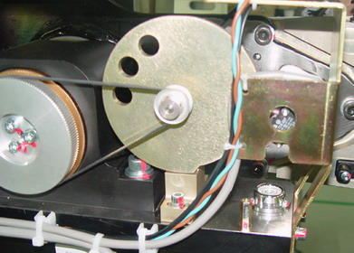

Operating Documentation
Direction 5181166-800, Rev# 7
BrightSpeed Select Service Methods Adv
Operating Documentation |
| Required Persons | Preliminary Reqs | Procedure | Finalization |
|---|---|---|---|
| 1 |
Procedure Effectivity:
| Last Revised: | August 18, 2006 |
| Item | Qty | Effectivity | Part# | Manufacturer | |
|---|---|---|---|---|---|
| ESD Wrist-Band | 1 | - | - | - | |
| 3 mm hex key | 1 | - | - | - | |
| Voltmeter (DC) | 1 | - | - | - | |
Remove all covers except rear cover. All work should be performed from the left, front corner.
Turn off the Axial Drive and HVDC switches on the gantry’s Service Switch Panel.
Turn off the 120VAC switch.
Perform all required LOTO activities.
Loosen the two (2) hex screws that mount the Tilt Potentiometer to the gantry assembly.
Remove the belt from the 32-tooth pulley on the Tilt Pot Assembly.
Remove connectors from the Tilt Pot Assembly (Illustration 1).
Illustration 1: Gantry Tilt Pot Assembly

Remove two (2) hex screws that secure the Tilt Pot Assembly.
Remove the Tilt Pot Assembly.
Reverse the above steps to install the new Tilt Pot Assembly.
Perform Tilt Characterization.
No finalization required.